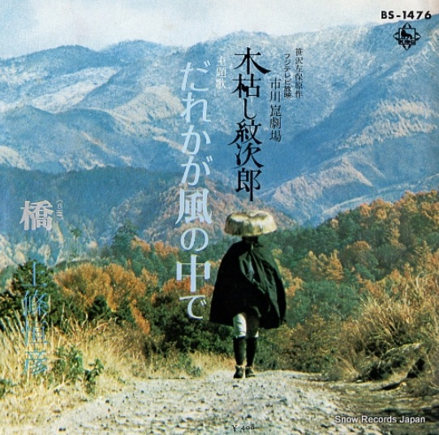

だれかが風の中で 上條恒彦

発売日
1972年
作詞
和田夏十
作曲
小室等
編曲
－
メディア
17㎝シングルレコード（ドーナツ盤）
YouTubeで見る
テレビ時代劇「木枯し紋次郎」の主題歌です。 上條恒彦さんの力強い歌唱と、ダイナミックでスケール感のある演奏が印象的な一曲です。 時代劇の主題歌という枠を超えた、まるで映画音楽のような壮大な雰囲気があります。
このスケール感は、映画監督の市川崑さんがプロデュースに携わっていたことも影響しているのかもしれません。
「あっしにはかかわりのないことで…」と言いながらも、人情に流され悪人を成敗する、中村敦夫さん演じるニヒルな浪人・木枯し紋次郎の姿が今でも思い出されます。 またテレビで放送してほしいと思う作品の一つです。
歌詞より
♪♪ きっとおまえは 風の中で待っている ♪♪
歌ネットで歌詞を見る
← 一覧へ戻る
このスケール感は、映画監督の市川崑さんがプロデュースに携わっていたことも影響しているのかもしれません。
「あっしにはかかわりのないことで…」と言いながらも、人情に流され悪人を成敗する、中村敦夫さん演じるニヒルな浪人・木枯し紋次郎の姿が今でも思い出されます。 またテレビで放送してほしいと思う作品の一つです。